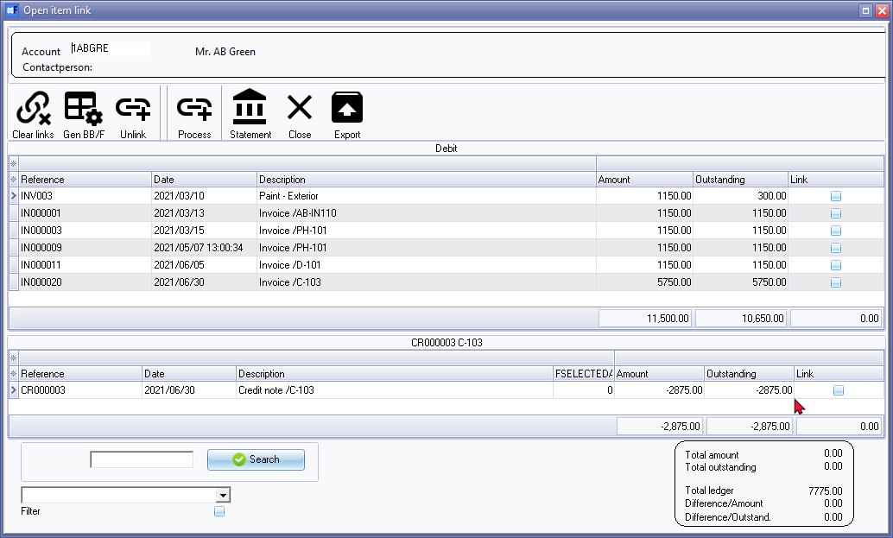
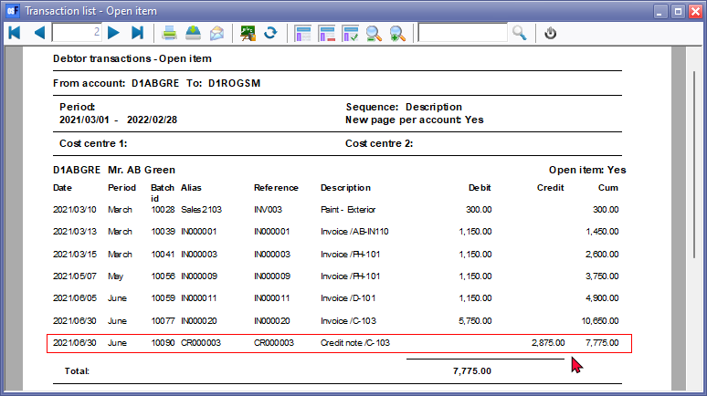
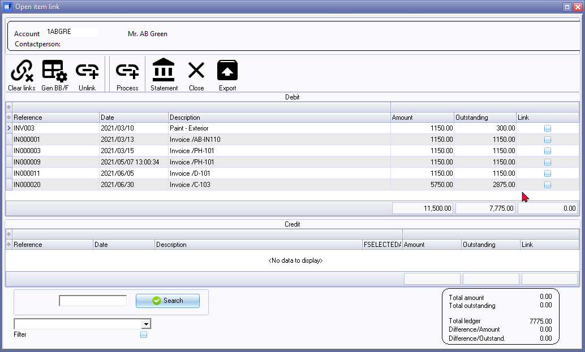

Open item - Debtors
How does Open item processing help to manage debtor accounts in the debtors ledger?
Open item processing plays a crucial role in managing debtor accounts within the debtors ledger (accounts receivable) by providing a systematic and detailed method to track, reconcile, and manage outstanding invoices and payments from customers. Here's how open item processing helps manage debtor accounts:
- Detailed Transaction Tracking: Open item processing allows for the detailed recording of individual transactions in debtor accounts. This means that each invoice and payment is tracked with specific information, such as the invoice date, due date, amount, and payment date.
- Accurate Account Balances: By recording every transaction individually, open item processing ensures that debtor account balances are accurate and up-to-date. This accuracy is crucial for understanding the financial position of the company.
- Transaction Reconciliation: Regular reconciliation processes are employed to match recorded transactions against debtor account balances. This reconciliation helps identify any discrepancies or errors in the debtor ledger and ensures the integrity of the financial data.
- Ageing Analysis: Open item processing facilitates the generation of aging reports, which categorize outstanding invoices by their due dates. This helps the company prioritize collections efforts and determine which invoices are overdue and require attention.
- Clearing Outstanding Items: When a payment is received and matched with specific invoices, those invoices are considered "cleared" or "closed." This reduces the outstanding balance of the debtor account and allows for accurate tracking of which invoices are paid and which are still open.
- Customer Statements: The system can generate detailed customer account statements that provide customers with a transparent view of their outstanding balances and transaction history. These statements can include a breakdown of open items.
- Improved Collections Management: Open item processing helps organizations efficiently manage their collections process by providing a clear view of outstanding invoices and prioritizing collections activities. This can help improve cash flow and reduce bad debt.
- Historical Reference: Over time, open item processing creates a historical record of all debtor transactions. This historical reference is valuable for understanding customer payment patterns, making financial forecasts, and resolving any disputes or discrepancies.
- Transparency and Customer Relations: Customers appreciate transparency in their accounts. Open item processing ensures that customers have a clear view of their financial obligations and payment history, which can enhance customer relations.
In summary, open item processing in debtor accounts within the debtors ledger provides an organized and transparent method for managing accounts receivable. It helps companies maintain accurate records, improve cash flow, streamline collections efforts, and enhance customer relations by ensuring clarity and accuracy in the management of outstanding invoices and payments.
Open item debtor (customer / client) accounts in osFinancials
In the case of debtor (customer / client) accounts, debit transactions are processed in the sales batch or invoices (document entry).
Once these debit transactions is updated (posted) to the ledger, and credit transactions are processed in the receipts batch, or credit notes in document entry) these credit transactions may be linked to the debit transactions.
Once these debit transactions is linked to a credit transaction, only the outstanding transactions (unlinked) outstanding transactions should be listed.
|
|
If all the transactions are not linked, it will be indicated on the Totals tab in a red or orange colour. This will help you to identify those accounts which may need open item processing.
|

|
|
It is important to check that all batches and documents are updated to the ledger and that all transactions are linked, before sending out debtor statements. The Unposted batches tab of Open item link will only display the linked transactions which is already linked but not yet posted (updated) to the ledger. There may also be unposted documents and batches, which need to be linked, once these transactions and documents are posted (updated) to the ledger. To view these, select in Input → Checking for unposted items on the Default ribbon). |

Open item / Ageing reports for debtor (customer / client) accounts
In addition to the Age analysis icon on the Reports ribbon; or the Due tab of Open item link icon on the Default ribbon; the following reports is available to manage open item debtor (customer / client) accounts:
Reports menu
Transaction reports -
- Transaction list - Open item - This report lists only those outstanding transactions in documents and batches which are posted (updated) to the ledger. It will list only those transactions with outstanding amounts. Any debit amounts, which are not linked to credit transactions, should be processed in Open item link (Default ribbon).
- Transaction list - This report lists all the transactions in documents and batches which are posted (updated) to the ledger. All transactions will be listed irrespective of open item links.
Debtor statements -
- Debtor statements - The statement will print all transactions. It does not use the "Open item" feature.
- Debtor statements - Outstanding The statement will print only the transactions with outstanding amounts.
User reports menu
Age analysis reports -
- Age analysis - Balances detail - Displays the reference, date, amount and description for each transaction. The Total outstanding as at the Date of ageing is split to the number of days specified in up to 3 periods.
- Age analysis - Balances detail (open item) - This is similar to the "Balances detail" report, but it displays the outstanding amount and TransactionID.
- Age analysis - Balances - This is a similar report as the "Balances detail" report. It will only list the balances for each ageing period.
Accessing the Open item link screen for a debtor (customer / client) account
To launch the Open item link screen for a debtor account:
|
|
Documents list screen - context menu - Others → Open item link option. On Default ribbon, select Documents (Documents list screen), select the Document type, e.g. Invoices, Credit notes or Quotes. Right-click on a selected document. On the context menu, select the Others → Open item link option. This will launch the "Open item link" form for the debtor (customer / client) account;; associated with the selected document. |
- Go to Open item link (Default ribbon).
- On the list of accounts in the Totals or the Transactions tab, select the debtor (customer / client) account and double-click.
- The "Open item link" screen for a selected debtor (customer / client) account is launched.

|
|
If the transaction for Credit note CR000003 is not linked to Invoice IN000020, both Credit note CR000003 and Invoice IN000020, will be listed on the "Transaction list - Open item" report as well as the "Debtor statement - Outstanding".  You may need to process the links on the Open item link (Default ribbon). |

- All the outstanding transactions which are not linked (matched), while processing transactions in batches and documents, will be listed. Once all transactions for an open item debtor account, is correctly linked and processed, there should be no transactions in the "Credit" section of the screen: 
|
|
Transactions tab - This list the posted transactions similar to the "Open item link" screen.
|
|
|
Open item - processing options and filter options |